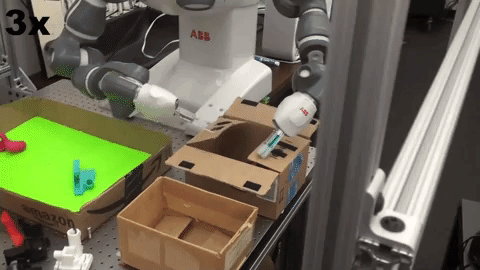
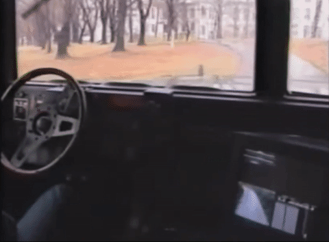
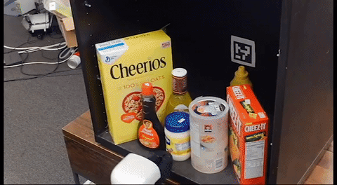

Recently, we have witness numerous success stories in Deep Learning ranging from Computer Vision to Natural Language Processing. My research examines how can we move this technology into the industrial manufacturing sector via robotic learning.

ABB YuMi Robot Closing a Box using Imitation Learning
Robotic manipulation tasks are challenging to learn due to noncontinuous dynamics, high dimensional state representations, and potentially delayed reward. Consider for example the box-closing task shown above. From an Reinforcement Learning perspective this is hard because the reward function, that provides sufficient information, could be difficult to specify. Classical robotic techniques could also be problematic for this task, because they require a model for how the box deforms under the applied forces. However, by using supervision we can manually guide the robot to complete the task. The robot then uses machine learning to infer the underlying behavior. The research field that studies this approach is known as Imitation Learning.
An intuitive approach to provide supervision to a robot is a technique known as Behavior Cloning, in which a robot observes a supervisor's policy and learns a mapping from state to control via regression. In the early 90s , this approach was applied to learn an end-to-end self driving car, known as ALVINN. When applying this technique, the researchers observed the car would veer from the center of the road and not know how to recover. The reason for this is that small mistakes could compound during execution of the robot’s policy and force it to enter an area of the state space that wasn’t seen in training, which is known as covariate shift.

ALVINN Suffering from Covariate Shift
One technique to correct for covariate shift is by sampling states from the robot's policy. A common algorithm, DAgger, iteratively rolls out its current policy and asks for supervisor labels (or corrections) at the states it visits. Empirically, DAgger has been shown to reduce covariate shift and lead to robust control policies. However, when we have used DAgger in practice on physical robots, we observed that is was challenging for human supervisors. In a human study we performed, it was found that DAgger is performed worst than Behavior Cloning due to the extra cognitive burden on humans. The paper and subsequent comparisons of the two algorithms can be found here .
Another way to show the robot corrective examples and prevent drift is to inject noise into the supervisor's demonstrations. Our insight is that by injecting small levels of noise, we will focus on the states that the robot needs to recover from -- the states at the boundary of the ideal policy. This has the potential to obtain the advantages of DAgger-like methods by recovering from errors as the robot starts making them, without the disadvantage of aggregating these errors at training time, and getting the robot to dangerous states with low reward. A paper that examines this approach in relation to DAgger and Behavior Cloning can be found here . .Another goal of my research is to apply Imitation Learning algorithms to various manipulation tasks, in order to better understand the limitations, benefits and sample complexity. Recently, we have succesfully applied Imitation Learning to the tasks of precision grasping and planar grasping in clutter. In the grasping in clutter, tasks a robot must learn how to search for a goal object and reason about how to push obstacle objects out of the way. Shown below is our recent extension to this paradigm, where the robot observes the world through an eye-in-hand camera.

HSR Trained to Retrieve Object from Cupboard